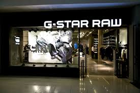

VERSACE

MAPG-Star RAW is a Dutch designer clothing company, founded by Jos van Tilburg in Amsterdam in 1989, which produces high quality clothing. Models for the brand include Liv Tyler, Mathias Ranegie, Girls' Generation, World Chess Champion Magnus Carlsen, Clémence Poésy and musician Sergio Pizzorno. Wikipedia
Founder: Jos van Tilburg
Founded: 1989, Amsterdam, Netherlands
CEO: Rob Schilder (Nov 2016–)
Headquarters: Amsterdam, Netherlands
Subsidiaries: G-Star RAW C.V., G-Star Inc., Global Retail Sweden AB, G-Star USA LLC
STORES
CONTACT